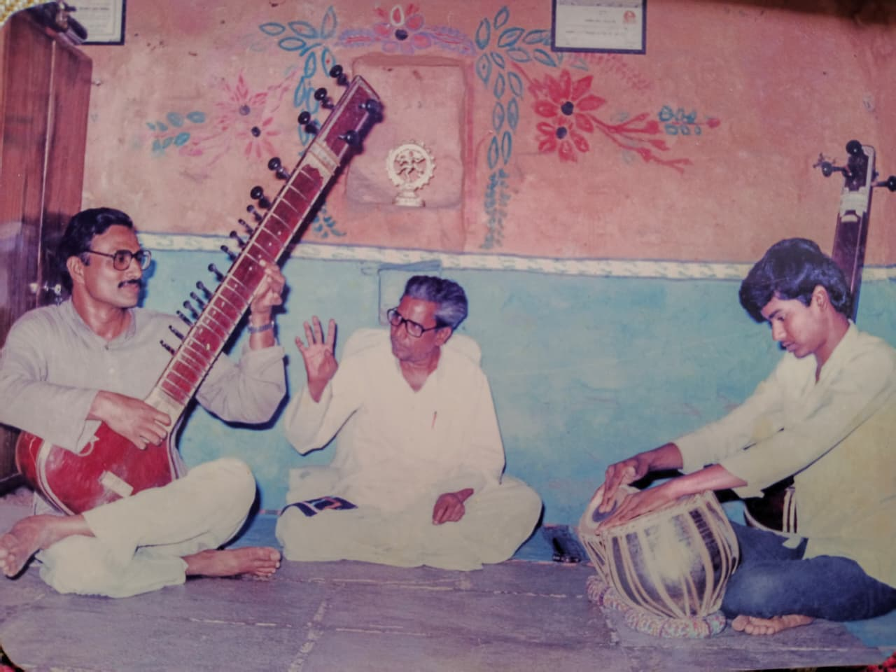
सुरमणी पं. रामदासजी अनवले गुरुजी यांनी मराठवाड्यात 1956 साली 'अनवले संगीत महाविद्यालयाची' स्थापना मराठवाड्यात दुसऱ्यांदा तथा लातूर जिल्ह्यात पहिल्यांदा केली. पं. अनवले गुरुजी हे मराठवाड्यातील पहिले आकाशवाणी कलावंत होण्याचा मान पटकावणारे महान संगीत साधक होते. त्यांच्या पवित्र स्मृतींना साक्षात नमन.
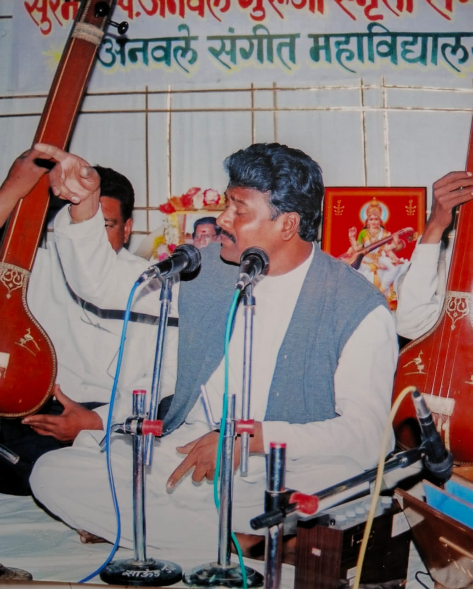
पं. डॉ. कृष्णा रामदासजी अनवले
मराठवाड्यातील राम कदम संगीत पुरस्कार प्राप्त ज्येष्ठ सुप्रसिद्ध गायक तथा संगीत विषयात पीएच.डी. मिळवणारे मराठवाड्यातील पहिले पदवीधारक. मागील 28 वर्षांपासून हावगीस्वामी महाविद्यालय येथे संगीत विभागाध्यक्ष. स्वामी रामानंद तीर्थ मराठवाडा विद्यापीठाच्या संगीत अभ्यास मंडळाचे माजी अध्यक्ष.
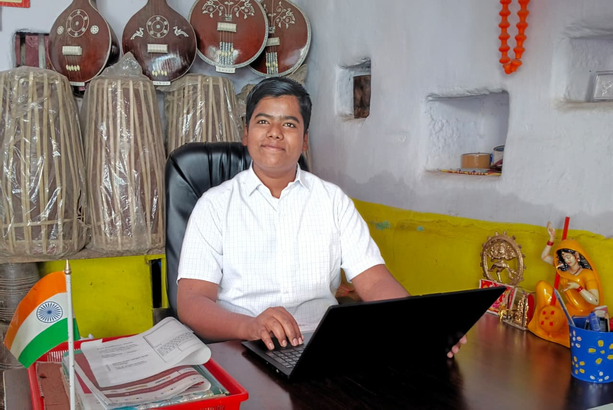
प्रा. श्री. ऋषिकेश कृ. अनवले
महाविद्यालयाच्या विशेष बाबी
१. ऐतिहासिक सांगीतिक वैभव
पाच पिढ्यांचा समृद्ध वारसा लाभलेले, मराठवाड्यातील दुसरे आणि लातूर जिल्ह्यातील पहिले अग्रगण्य संगीत महाविद्यालय.
२. उदगीरातील पहिला 'तंबोरा'
महाविद्यालयाचे संस्थापक सुरमणी स्व. पं. रामदासजी अनवले गुरुजी यांनीच 1949 साली ग्वाल्हेरवरून उदगीरात पहिला तंबोरा आणला.
३. परंपरेचा सुवर्ण इतिहास
70 वर्षांपेक्षा अधिक काळ गुरु-शिष्य परंपरा जपणारी आणि दर्जेदार व्यावसायिक कलाकार घडवणारी उदगीरची अग्रगण्य संस्था.
४. शासनाचे 'वृद्ध कलावंतांना मानधन' योजना
या योजनेत 1970 पासून आजतागायत शेकडो कलावंतांना मानधन मिळवून देण्यात यश तथा शिफारस. मराठवाड्यातील उल्लेखनीय संस्था.
५. जिल्ह्यातील पहिले मानाचे स्थान
लातूर जिल्ह्यात सांगीतिक शिक्षणाची मुहूर्तमेढ रोवणारे, शास्त्रीय व सुगम संगीताचे सर्वात जुने आणि अधिकृत केंद्र.
६. पाच पिढ्यांचा अनुभव
पाच पिढ्यांच्या कडक शिस्तीत आणि अनुभवी मार्गदर्शनाखाली संगीत क्षेत्रात पदवी व उज्ज्वल करिअर घडवण्याची सुवर्णसंधी.
७. मराठवाड्याची अधिकृत सांगाती
ऐतिहासिक वारसा आणि प्रमाणित अभ्यासक्रमाच्या बळावर विद्यार्थ्यांचे सांगीतिक भविष्य सुरक्षित करणारी नामांकित संस्था.
८. अतिरिक्त गुण मिळविण्यात सुयश
अखिल भारतीय गांधर्व महाविद्यालय मंडळाच्या माध्यमातून शेकडो विद्यार्थ्यांना दहावीच्या परीक्षेत अतिरिक्त गुण मिळविण्यात सुयश.
कार्यक्रम / संमेलन
1967
1977 / 1989
1978 / 1999
1998
2002
2006 / 2010 / 2012 / 2019
2013 / 2014 / 2019
क्षणचित्रे
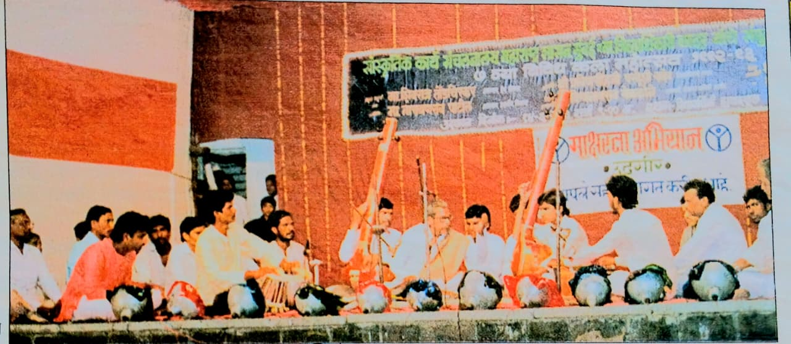
सांस्कृतिक कार्य संचालनालय, मुंबई आयोजित विविध कला महोत्सवात गायन सादर करताना सुरमणी पं. रामदासजी अनवले गुरुजी. तबला — डॉ. कृष्णा अनवले. संवादिनी — श्री रतिकांत घोगरे.
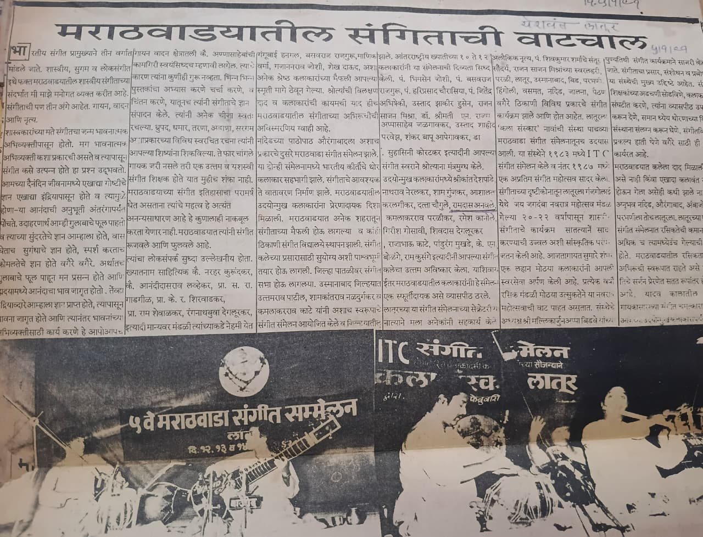
वृत्त
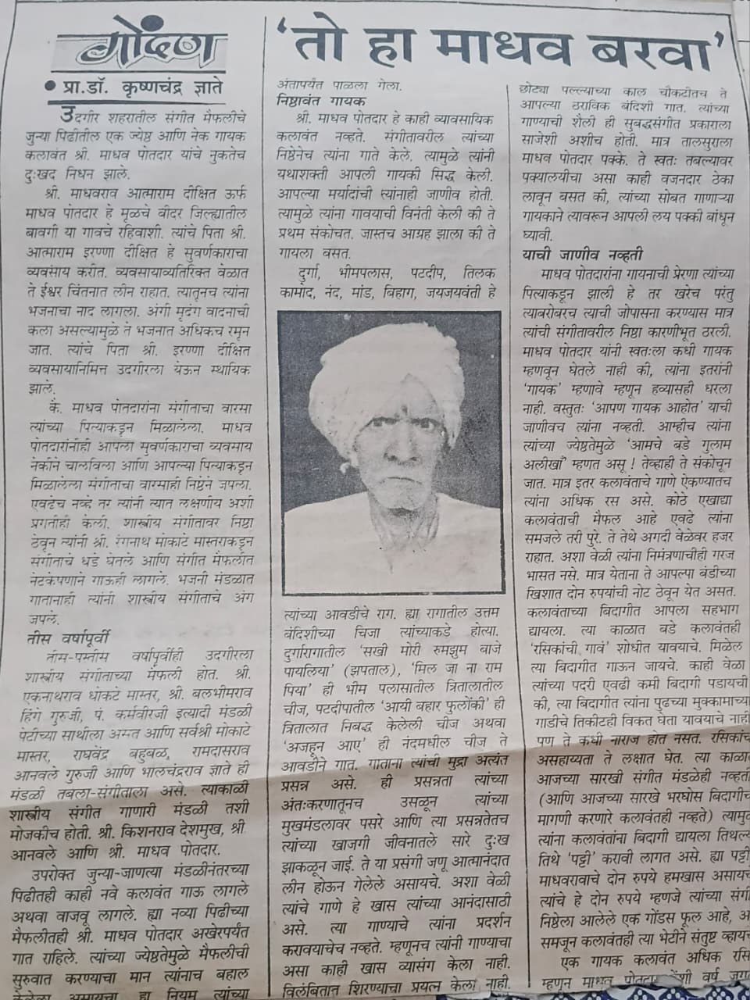
वृत्त
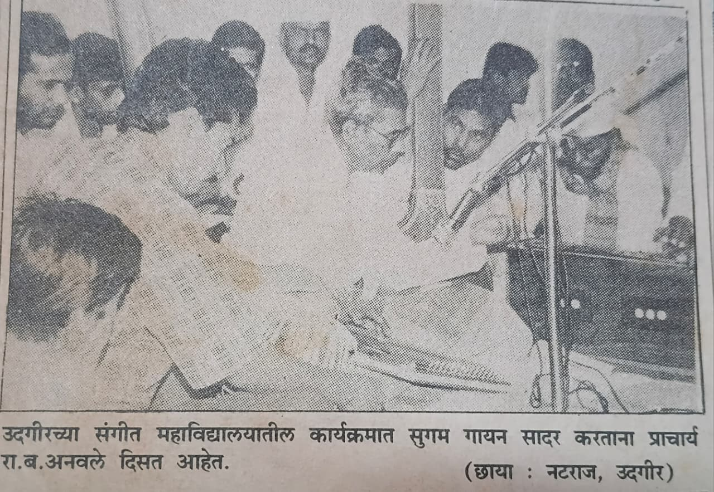
वृत्त
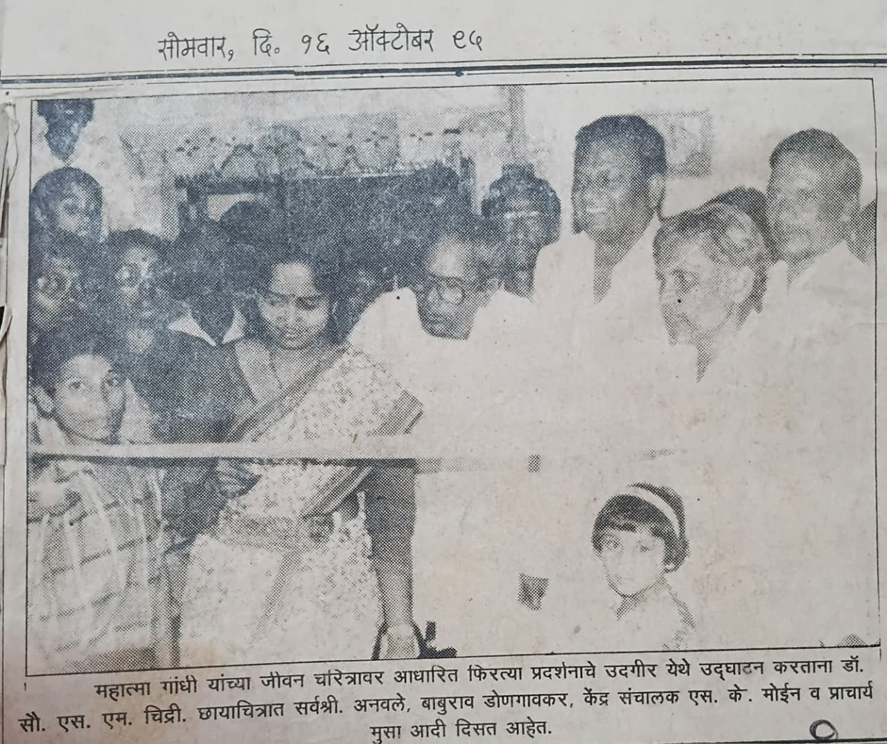
वृत्त
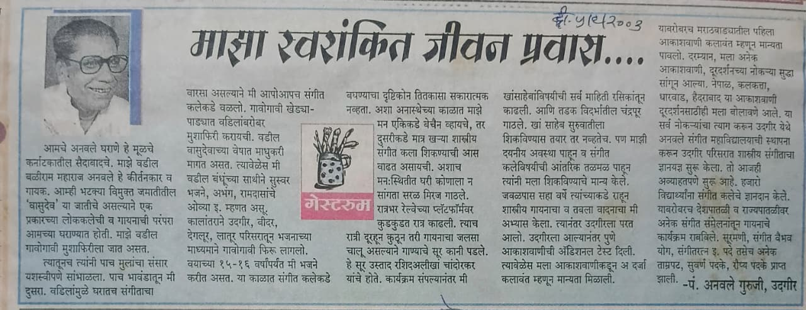
वृत्त
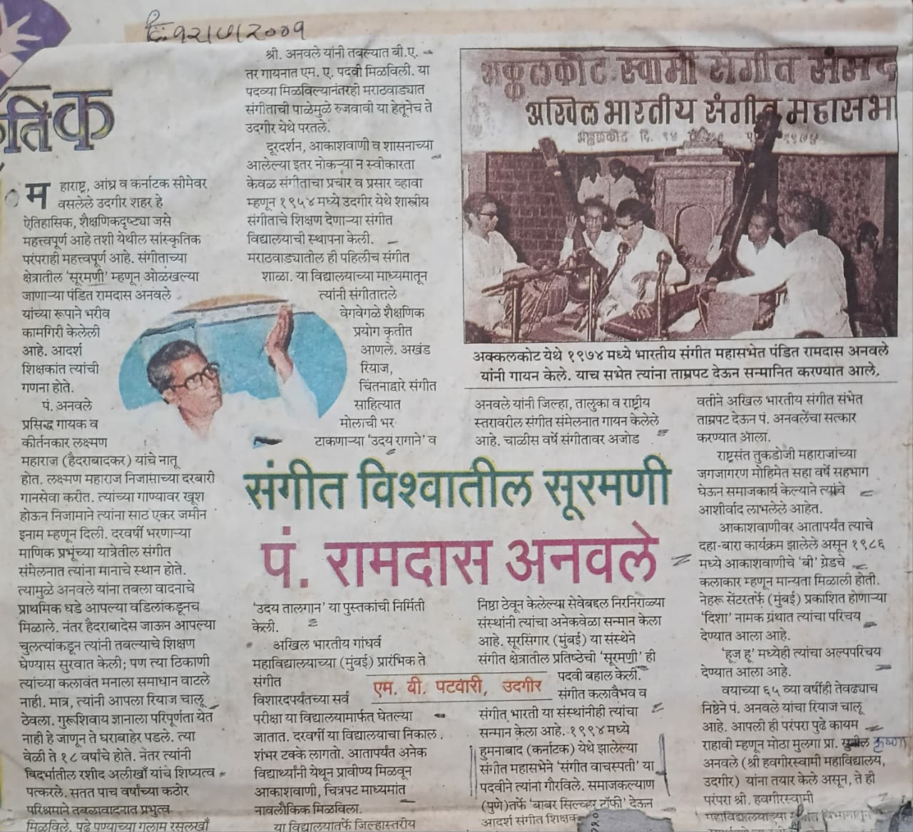
वृत्त
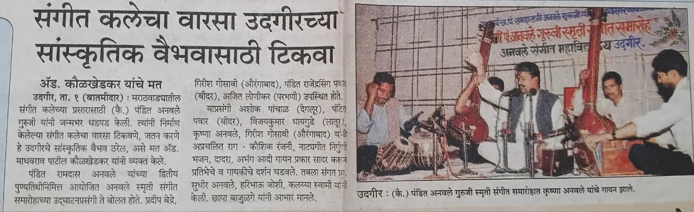
वृत्त
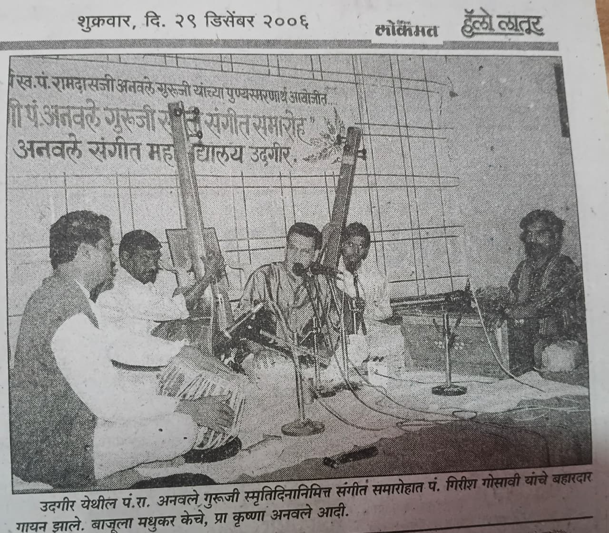
वृत्त
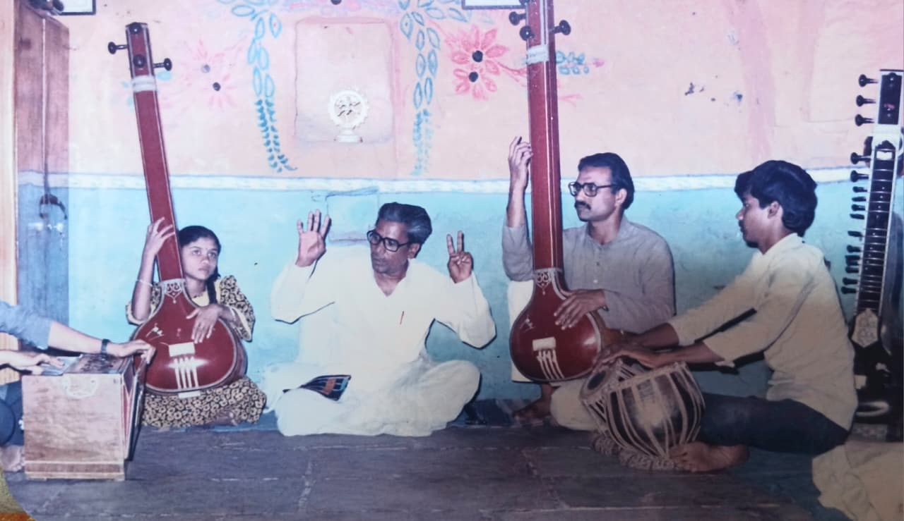
महाविद्यालयात विद्यार्थ्यांना मार्गदर्शन करताना सुरमणी स्व. पं. रामदासजी अनवले गुरुजी व शिष्य मंडळ.
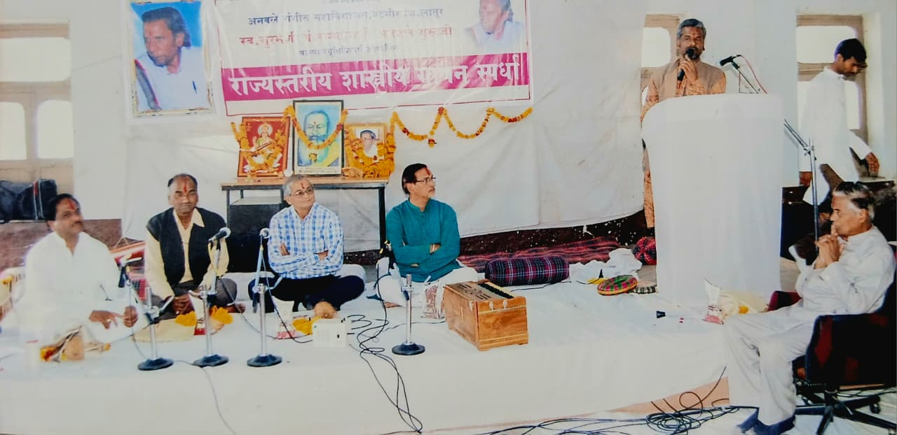
सुरमणी पं. रामदासजी अनवले गुरुजी यांच्या स्मृतिप्रीत्यर्थ आयोजित राज्यस्तरीय संगीत समारोहात मार्गदर्शन करताना पं. डॉ. कृष्णराज अनवले. सोबत पं. गिरीश गोसावी, प्रा. श्री श्यामराव संगमकर, ॲड. माधवरावजी पाटील कौलखेडकर साहेब, प्रा. विजयकुमार धायगुडे इ.
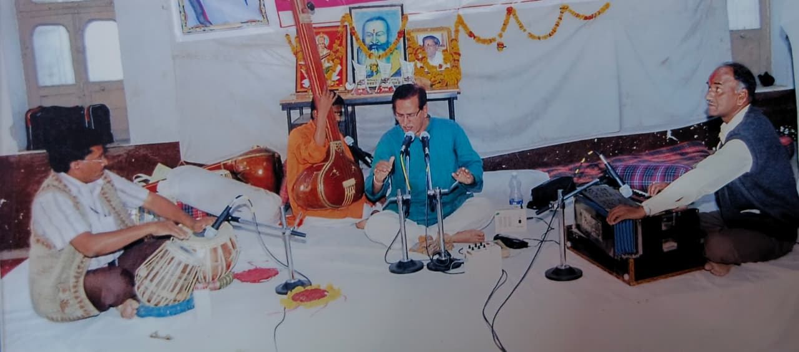
सुरमणी पं. रामदासजी अनवले गुरुजी यांच्या स्मृतिप्रीत्यर्थ आयोजित राज्यस्तरीय संगीत समारोहात गायन सादर करताना पं. गिरीश जी गोसावी. तबला — प्रा. सुधीर अनवले.
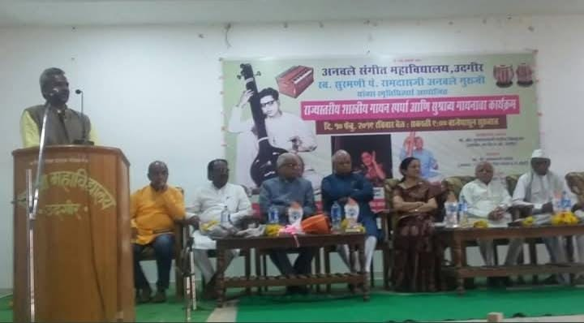
सुरमणी पं. रामदासजी अनवले गुरुजी राज्यस्तरीय शास्त्रीय गायन स्पर्धेत प्रास्ताविक सादर करताना डॉ. कृष्णा अनवले, आमदार संजयजी बनसोडे, अध्यक्ष श्री प्रभाकर भांडारे, मुंबई, डॉ. अनया थत्ते, मुंबई, प्रा. विजयकुमार पाटील, प्रा. विजयकुमार धायगुडे, प्रा. वेदांग धाराशिवे, प्रा. सुधीर अनवले.
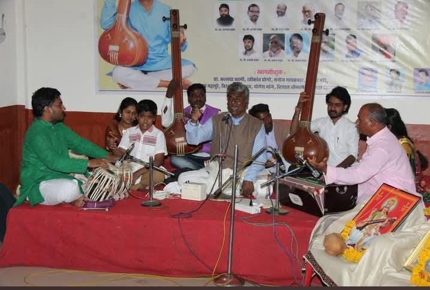
शास्त्रीय गायन सादर करताना डॉ. पं. कृष्णराज अनवले जी.
संपर्क
ॲडमिशन
अनवले संगीत महाविद्यालयाचा इतिहास
अनवले संगीत विद्यालयाची स्थापना
अभिजात संगीताची शास्त्रोक्त तालीम घेतल्यानंतर त्यांनी आपला मोर्चा उदगीर या आपल्या जन्मभूमीकडे वळविला. त्यांनी पाहिले की, उदगीरसारख्या ग्रामीण भागात अभिजात संगीत शिकविणारे एकही विद्यालय नाही. म्हणूनच १९५४ साली गानप्रचारार्थ त्यांनी 'अनवले संगीत विद्यालया'ची स्थापना केली. अशा प्रकारे हे संगीत विद्यालय लातूर जिल्ह्यातील पहिले तर मराठवाड्यातील दुसरे संगीत महाविद्यालय ठरले. यापूर्वी अण्णासाहेब गुंजकर यांनी १९२७ साली नांदेड येथे गायन-वादन विद्यालयाची मुहूर्तमेढ रोवली होती.
ज्ञानयज्ञाची सुरुवात
पं. अनवले संगीत विद्यालयातील पहिले विद्यार्थी होण्याचा बहुमान पटकावला तो कृष्णचंद्र ज्ञाते यांनी. अशा प्रकारे या विद्यालयाच्या माध्यमातून उदगीर परिसरात शास्त्रीय संगीताचा ज्ञानयज्ञ सुरू झाला. यातून उदगीरसारख्या छोट्याशा गावात रागविद्येची अर्चना निष्ठेने चालू राहिली.
या घटनेचा उल्लेख मुंबई येथील नेहरू सेंटरच्या वतीने प्रकाशित झालेल्या 'दिशा' या पुस्तिकेत केला आहे.
ग्रामीण भागातील विद्यार्थ्यांसाठी ज्ञानगंगा
अशाप्रकारे त्यांनी ग्रामीण भागातील विद्यार्थ्यांसाठी भगीरथाप्रमाणे ज्ञानगंगा उदगीर येथे आणली. यातून हजारो विद्यार्थ्यांनी आपली ओंजळ तालासुरांनी भरली. पैशांचा विचार न करता गरजू व होतकरू विद्यार्थ्यांना त्यांनी भरभरून दिले.
यासंदर्भात लातूर जिल्हा रौप्यमहोत्सवी वर्षानिमित्त 'दै. लोकमत' ने प्रकाशित केलेल्या विशेष पुरवणीत लिहिले आहे की,
सर्वसमावेशक संगीत शिक्षण
पंडितजींनी स्वतः गरिबी काय असते हे पाहिल्यामुळे गरीब विद्यार्थ्यांना त्यांनी रिकाम्या हातांनी कधीही परत पाठविले नाही. ते स्वतः भटक्या-विमुक्त जमातीत जन्माला आल्यामुळे अशा जाती-जमातीतील विद्यार्थी संगीत कलेपासून वंचित राहू नये म्हणून त्यांना मोफत संगीताचे धडे दिले. त्यांनी विद्यार्थ्यांना सांगीतिक शिक्षण देऊन तृप्त तर केलेच, परंतु याबरोबरच अनेकांचे जीवन उभे केले.
सांगीतिक वारशाचे महत्त्व
थोडक्यात असे म्हणता येईल की, पं. रामदासजी अनवले गुरुजींनी लातूर जिल्ह्यातील पहिले विद्यालय स्थापन करून एक क्रांतिकारक पाऊल उचलले, ज्याचा लाभ समस्त लातूर जिल्हावासीयांना झाला.
पं. रामदास अनवले यांनी उदगीर येथे पहिला तंबोरा आणला. संगीत महाविद्यालयाच्या स्थापनेपासून हजारो विद्यार्थी दूरदर्शन, आकाशवाणी, संगीत शिक्षक व प्राध्यापक म्हणून कार्यरत आहेत. आजही अंध, अपंग, मागासवर्गीय, गरजू व होतकरू विद्यार्थ्यांना विनामूल्य मार्गदर्शन केले जाते.